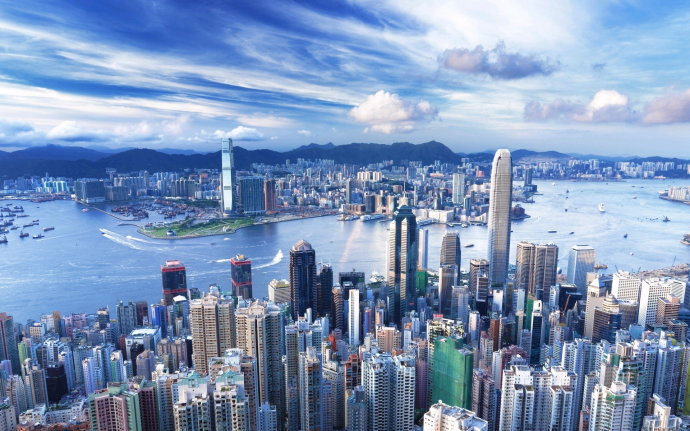
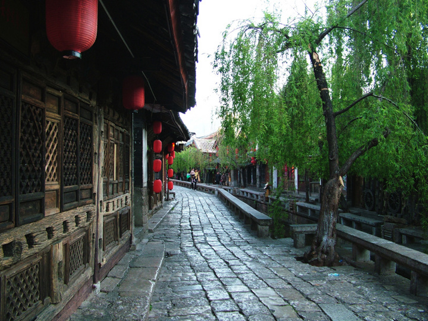
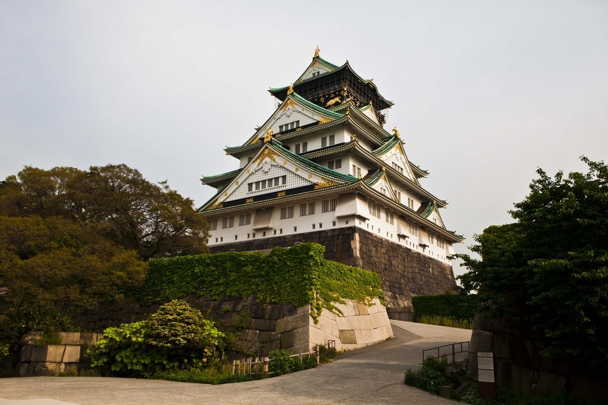

印度尼西亚共和国（印尼语：Republik Indonesia，英语：The Republic of Indonesia），简称印度尼西亚或印尼，是东南亚国家。由约17508个岛屿组成，是全世界最大的群岛国家，疆域横跨亚洲及大洋洲，别称“千岛之国”，也是多火山多地震的国家，首都为雅加达。与巴布亚新几内亚、东帝汶和马来西亚等国家相接
极地长征由Mary Gadams在香港创立于2002年2月。Mary在创立比赛之前已经完成了数不尽的马拉松，百公里赛，定向越野赛，铁人三项等等比赛。第一场比赛是2003年的敦煌，接下去的2004年加入了智力阿塔卡马沙漠以及撒哈拉沙漠，最终于2006年加入的南极站使得整个赛事变的更加完整。
龟峰是世界地质公园龙虎山-龟峰地质公园和世界自然遗产"中国丹霞"的组成部分，位于弋阳县城南信江南岸，东距上饶60km，西距鹰潭35km，地处三清山、龙虎山和武夷山之间。因其"无山不龟，无石不龟"，且整座山体就像一只硕大无朋的昂首巨龟而得其名。
在粉红清真寺的夏宫，清晨8点到10点是最美的，早晨温暖的光线正好斜着照在巨大的彩色玻璃窗上，向波斯地毯上投下了美妙神奇的色彩和光影组合。她只在阳光灿烂的清晨，才展现出自己最美的一面。
西西里岛位于南部，地中海中部，形状类似一个三角形，东北端隔3千米宽的墨西拿海峡与亚平宁半岛相望，岛上多丘陵，地处典型的地中海气候，冬季温暖潮湿，而夏季则干燥炎热，沿海地区，尤其是西南方的部分，气候也受到非洲大陆影响所以夏天更为酷热。最高温可达48℃。
泰国北部第一大城，清迈府首府。泰北政治、经济、文化中心。位于宾河人口10.2万 （1980）。市郊土地肥沃，农产富饶。1296年起曾为兰那王朝（或称“南掌”）都城。旧城在河西，新城在河东，有两座桥梁相连。以手工艺著名，[5] 有珠宝首饰、银器、陶器、木雕、丝绸等。工业有柚木初步加工和锯木等。交通发达，为北线铁路终点站，距曼谷752公里。设有机场。
亚龙湾位于中国最南端的热带滨海旅游城市--三亚市东南28公里处，是海南最南端的一个半月形海湾，全长约7.5公里，是海南名景之一。亚龙湾沙滩绵延7公里且平缓宽阔，浅海区宽达50-60米。终年可游泳，被誉为“天下第一湾”。“三亚归来不看海，除却亚龙不是湾”的美誉吸引了每年数以千万计的国内外游客 ！
香港岛上的文武庙、铜锣湾天后庙、圣约翰大教堂；九龙的黄大仙祠墓、侯王庙、慈云山观音庙、九龙清真寺；沙田的万佛寺、车公庙、蓬瀛仙馆、半园春、道风山基督教堂；荃湾的竹林禅院、东普陀、荃湾天后庙；云浮仙观；西贡的佛堂天后庙、蚝涌车公庙以及大屿山宝莲寺、长洲北帝庙、坪州天后庙等。
首尔是朝鲜王朝600年间的都城，有众多古迹。朝鲜时代的宫殿、宗庙和其他建筑有景福宫、昌德宫、秘苑、昌庆宫、庆熙宫、德寿宫、云岘宫、宗庙、社稷、成均馆、南大门、东大门、汉城城墙、南汉山城、北汉山城、贞陵、洪陵、宣靖陵、献仁陵、泰康陵等等。
东京古称江户，是日本自德川幕府时代以来的主要都市之一，明治维新迁都江户，改名东京，自此成为日本首都。后逐渐发展成为日本政治、经济、文化、交通等众多领域的枢纽中心，亦为世界经济发展度与富裕程度最高的都市之一。东京是亚洲第一大城市，世界第二大城市，全球最大的经济中心之一。
“西双”是傣语“12”的意思，“版纳”是指比县小一些的行政区域，“西双版纳”意为“十二个行政区”。西双版纳，古代傣语为“勐巴拉娜西”，意思是“理想而神奇的乐土”，这里以神奇的热带雨林自然景观和少数民族风情而闻名于世，是中国的热点旅游城市之一。每年的泼水节于4月13-15日举行，被誉为“东方狂欢节”。
云南即“彩云之南”“七彩云南”，另一说法是因位于“云岭之南”而得名。面积39万平方千米，占全国面积4.11%，在全国各省级行政区中面积排名第8。总人口4596万（2010年），占全国人口3.35%，人口排名为第12名。下辖8个市、8个少数民族自治州。
丽江古城有着绚丽丰富多彩的地方民族习俗和娱乐活动，纳西古乐、东巴仪式、占卜文化、古镇酒吧以及纳西族火把节等等，别具一格。丽江古城充分体现了中国古代城市建设的成就，是中国民居中具有鲜明特色和风格的类型之一。
云台山内地质遗迹丰富，30亿年来，形成了太古宇、元古宇、古生界和新生界地层；多次的构造运动，尤其是2300万年以来，新构造运动的强烈抬升和水蚀作用的深度下切，造就了云台山双崖对峙的峡谷群和各种动态的瀑、泉、溪、潭，共同构成了旷奥兼具的“云台地貌”景观。
成都是“首批国家历史文化名城”和“中国最佳旅游城市”，承载着三千余年的历史，拥有都江堰、武侯祠、杜甫草堂、金沙遗址、明蜀王陵、望江楼、青羊宫等众多名胜古迹和人文景观。
墨尔本（Melbourne）是澳大利亚维多利亚州的首府、澳大利亚联邦第二大城市，澳洲文化、工业中心，是南半球最负胜名的文化名城。墨尔本曾是澳大利亚联邦的首都，城市绿地率高达40%。大墨尔本地区面积达到3,400平方英里（8806平方公里），是南半球较广大的都会区之一。墨尔本城市环境非常优雅，曾荣获联合国人居奖，并连续多年被联合国人居署评为“全球最适合人类居住的城市”。
“大阪”在古代多称为“大坂”，而“大坂”一词最早出现在室町时代。自奈良时代开始，大阪就因其临海的地理位置成为贸易港口。丰臣秀吉修建大阪城，并以大阪作为丰臣政权的统治核心城市。在江户时代，大阪和京都江户并称为“三都”，是当时日本经济活动最为旺盛的商业都市。在战后，仍是西日本的大都市。
纽约（New York），是纽约都会区的核心，也是美国最大城市。为了与其所在的纽约州相区分，被称为纽约市。纽约位于美国东海岸的东北部，是美国人口最多的城市，也是个多族裔聚居的多元化城市。
拉斯维加斯（Las Vegas） 是美国内华达州的最大城市，以赌博业为中心的庞大的旅游、购物、度假产业而著名，世界上十家最大的度假旅馆就有九家是在这里，是世界知名的度假圣地之一，拥有“世界娱乐之都”和“结婚之都”的美称。
惠灵顿附近群山连绵，满目苍翠，碧海青天，景色季丽。气候温和，四季如春。惠灵顿气候温和湿润，是南太平洋地区著名的旅游胜地，人口约45万，与澳大利亚的悉尼和墨尔本同为大洋洲的文化中心。

新德里是一座典型的放射型城市，城市以姆拉斯广场为中心，城市街道成辐射状、蛛网式地伸向四面八方。宏伟的建筑群大多集中于市中心。政府主要机构集中在市区从总统府到印度门之间绵延几公里的宽阔大道两旁。